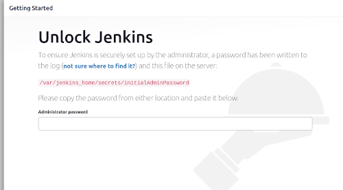
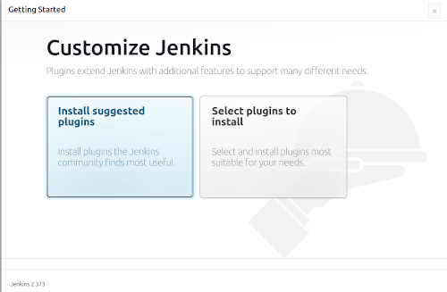
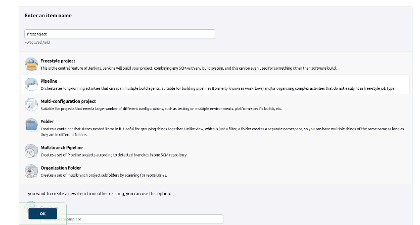
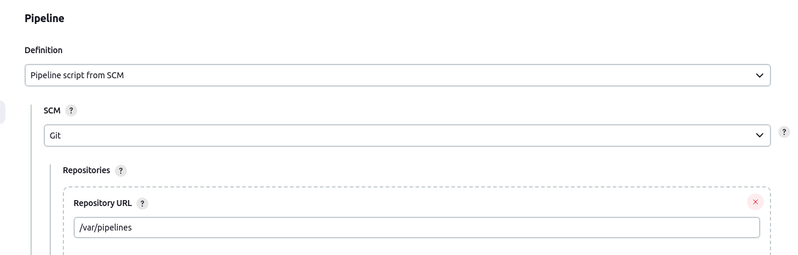
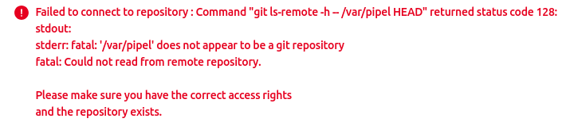

28.07.2023 14:00
Jenkins container - no installation + local repo
How to create a jenkins docker image, without the need of manual steps and enale local repo for Jenkinsfile
Lets start with the issue.
The issue I had is that I wanted to have a very fast working image of jenkins because I wanted to check lots of Jenkinsfiles an each time change oneline or even a parameter name.
When I started using the jenkins/jenkins image, I had to go through manual installation that looks like this
The process will look something like this:
docker run -td -p 8080:8080 jenkins/jenkins

Then the command:
docker exec <container_name> cat /var/jenkins_home/secrets/initialAdminPassword
Paste the output, and get to this screen:

No matter what I choose from here, it takes a lot of time.
1. If I choose "Install suggested plugins" - it takes a lot of time, there are a lot suggested plugins
And the more wasting time problem - I have to do that everytime I start this container.
2. "Select plugins to install" - Creates multiple problems:
What plugins to choose, time it takes to install them, mark the plugins I want, go over all the plugins, and more
Both choices are wasting time, probably a lot of time.
So can be done?
We can build and image out of jenkins/jenkins image with the right arguments so that the plugins will be installed
only once, and the image will be used with those plugins.
The first option will stop SetupWizard from running at initialization, to not waste my time:
-Djenkins.install.runSetupWizard=false
The second line is a RUN directive that will use jenkins tool named
jenkins-plugin-cli
to install plugins that I listed in a file named /usr/share/jenkins/ref/recommended-plugins.txt
RUN jenkins-plugin-cli -f /usr/share/jenkins/ref/recommended-plugins.txt
Local Repo
Another issue that I had is that I wanted jenkins to use a directory from my computer as the repo, as the place where Jenkins file is.
I already had some code that wanted to integrate into the pipeline.
Jenkins is not doing it by default, so I had to give it another option:
-Dhudson.plugins.git.GitSCM.ALLOW_LOCAL_CHECKOUT=true
This option enable the option to use local repository as a repository of the pipeline.
Now all I need to do is to mount the directory where I had the Jenkins file as a volume, and then just use it as a git repo for the pipeline.
Whats left is to create the image that I will use whenever I want to create new jenkins container with all this capabilities.
The Dockerfile looks like this:
FROM jenkins/jenkins
ENV JAVA_OPTS "-Djenkins.install.runSetupWizard=false -Dhudson.plugins.git.GitSCM.ALLOW_LOCAL_CHECKOUT=true"
COPY recommended-plugins.txt /usr/share/jenkins/ref/recommended-plugins.txt
Notice how I added both options to the JAVA_OPTS environemnt variable, it contains both of the options mentioned.
Now it needs to be built:
docker built -t jenkins:noinstallation-enablelocalrepo .
After this command, we can start a container and see what happens.
Starting the container
docker run --name myjenkins -td -p 8080:8080 -v /home/user/gitrepo:/var/pipelines jenkins:noinstallation-enablelocalrepo
Obviously, /home/user/gitrepo should be a git repo, and contain Jenkinsfile in it.
Enter name like "firstproject" and choose "Pipeline" from the list.

Press "OK"
Under "Pipeline", choose "Pipeline script from SCM" from definition options
Under "SCM" choose "Git"
In "Repository URL" put the path you mounted as volume, where Jenkinsfile is - in this case /var/pipelines

If there is no repo like that you should see

Otherwise, there should be no error there. If you created a git repo on the volume mounted it should be ok.
If the pipeline has no errors, you can now build it, and everything should be fine.
I used very basic pipeline here, just to show that it works:
pipeline {
agent any
stages {
stage('first'){
steps {
echo 'checking'
}
}
}
}